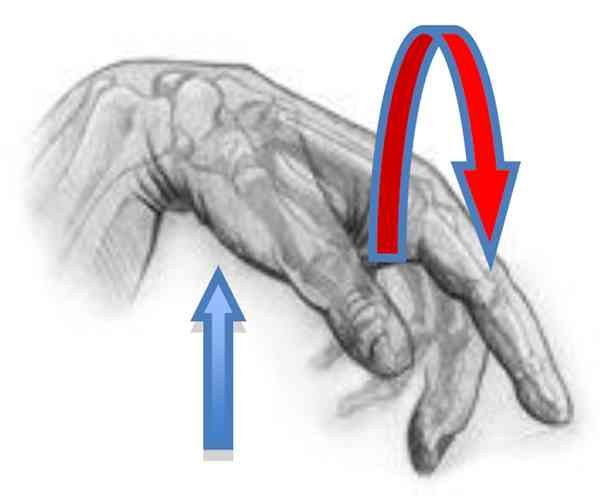

Bienvenue Sur Medical Education
Luxation : articulation MCP du pouce
Spécialité : traumatologie /
Points importants
-
Rechercher des fractures de la base de P1 associée et risque d'incarcération des os sésamoïdes
-
Désinsertion du faisceau transverse du muscle adducteur du pouce : déficit de l'adduction et gêne dans l'opposition du pouce => indication chirurgicale
-
Méthode de réduction : éviter de tracter dans l'axe, mais plutôt en poussant (manoeuvre de Farabeuf)
-
Fonction essentielle d’opposition du pouce
-
Incarcérations possibles imposant une réduction sanglante
Présentation clinique / CIMU
SIGNES FONCTIONNELS
-
Déformation avec impotence fonctionnelle totale de P1 et P2 à la face dorsale du métacarpien
-
Impotence fonctionnelle totale de l'AMP
CONTEXTE
Présentation clinique / CIMU
SIGNES FONCTIONNELS
- Déformation avec impotence fonctionnelle totale de P1 et P2 à la face dorsale du métacarpien
- Impotence fonctionnelle totale de l'AMP
CONTEXTE
Terrain
- Patient jeune, actif
Facteurs de risque
- Sports avec risques de chute de haute cinétique
Circonstances de survenue
- Souvent accident de sport, accident de la route (2 roues à moteur)
- Mécanisme violent en hyperextension du pouce => luxation dorsale le plus souvent
- Rares luxations antérieures qui sont souvent d'indication chirurgicale (réparation des lésions tendineuses associées)
EXAMEN CLINIQUE
Inspection
- Déformation caractéristique avec perte des reliefs anatomiques habituels de l'AMP du pouce
- Luxation dorsale (les plus fréquentes)
- Mais parfois, luxation palmaire avec saillie de la tête de M1 en dorsal
- Impotence fonctionnelle totale et douloureuse dans les mouvements d'extension et de flexion du pouce
Palpation
- Douloureuse, confirme l'inspection et doit conduire à la radiographie rapidement
Signes paracliniques
IMAGERIE
Radiographies de face et de profil (3/4)
- Désolidarisation des surfaces articulaires de la base de P1 et de la tête de M1
- Rechercher : fracture parcellaire de la base de P1
- Position des os sésamoïdes
- Chez l’enfant : aspect des plaques épiphysaires (fractures métaphyso-épiphysaires associées ?)
Traitement
TRAITEMENT INTRAHOSPITALIER
Stabilisation initiale
- Evaluation et traitement adapté de la douleur, en sachant que la réduction sera le traitement principal
-
Réduction aux urgences (MEOPA) :
- détendre les extenseurs du pouce en mettant le poignet en flexion palmaire
- saisir P1 et P2 et exercer une légère traction continue
- pendant que l'autre main repousse le 1er métacarpien vers l'arrière (extension de M1)
- pousser alors le doigt vers la paume de la main tout en continuant d'amener M1 vers l'arrière, ce qui « rechausse » P1 sur M1
 _343 Réduction de luxation de l'articulation métacarpophalangienne du pouce
- Immobilisation par attelle amovible prenant le pouce, ou gantelet du I, jusqu'à la consultation d'orthopédie traumatologie ou de chirurgie de la main (jugera de la stabilité et de la nécessité ou pas de garder ce type d'immobilisation) à J 8
_882
- - -
Gantelet plâtré prenant P1
Auteur(s) : Michel SCEPIDevenir / orientation
CRITERES D'ADMISSION
CRITERES DE SORTIE
ORDONNANCE DE SORTIE
RECOMMANDATIONS DE SORTIE
Bibliographie